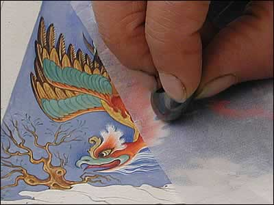

Repeat Burnishing
Between each stage of colouring, the artist repeatedly burnishes the painting. This seals the colour to the paper and gives a gleam to the surface. It is this process that gives Mughal paintings their famous jewel-like appearance.
| ||
| ...previous | next... | |